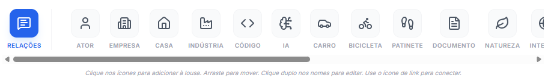
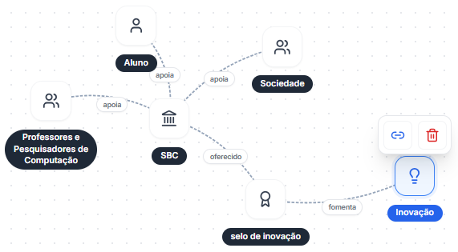
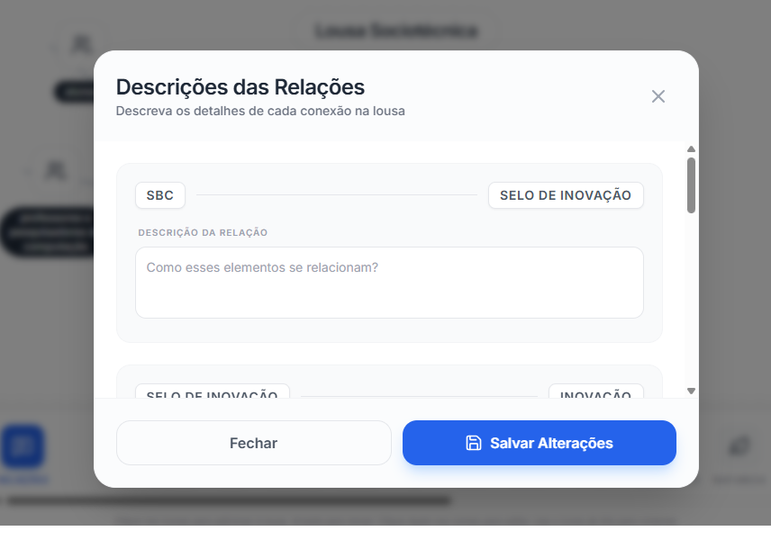
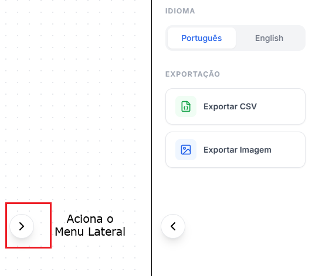

A Lousa Sociotécnica é uma ferramenta colaborativa utilizada para mapear ecossistemas sociotécnicos, tornando visíveis as relações entre atores humanos e não humanos envolvidos em um contexto tecnológico.
A ferramenta auxilia equipes a compreender cenários complexos antes da tomada de decisão ou do desenvolvimento de soluções tecnológicas. Com ela, torna-se possível mapear relações, dependências, mediações, conflitos, fluxos de influência e tensões entre diferentes actantes (termo emprestado de Latour para se referir a atores humanos e não humanos) que participam do ecossistema analisado.
Seu principal objetivo é apoiar a reflexão sobre a pergunta “Onde estamos?”, oferecendo uma visão estruturada do contexto sociotécnico atual. A Lousa Sociotécnica ajuda a revelar influências frequentemente invisibilizadas, relações ocultas, stakeholders negligenciados e formas de mediação tecnológica que impactam diretamente o funcionamento do ecossistema.
Entretanto, o SpED reconhece que ecossistemas sociotécnicos nunca podem ser completamente compreendidos ou totalmente representados. Muitas relações permanecem parcialmente invisíveis, ambíguas ou operam como verdadeiras “caixas-pretas”, dificultando a identificação precisa de como os actantes se conectam, influenciam uns aos outros ou participam da produção da realidade sociotécnica.
Nesse sentido, a incerteza não é tratada como uma falha do processo, mas como uma característica constitutiva dos próprios ecossistemas sociotécnicos. Sempre existe algo que escapa ao mapeamento: relações não percebidas, mediações invisíveis, interesses ocultos, efeitos emergentes ou actantes ainda não identificados. O ecossistema é inevitavelmente incompleto, dinâmico e em constante transformação.
Por essa razão, o SpED permite que a equipe também especule sobre o presente. Além de mapear relações observáveis, a ferramenta incentiva a formulação de hipóteses sobre conexões, influências, dependências e formas de agência que ainda não estão totalmente claras ou visíveis. Essa abertura para a especulação amplia a capacidade de reflexão crítica sobre o ecossistema, especialmente em contextos marcados pela complexidade, opacidade tecnológica e emergência de novos actantes sociotécnicos.
Deve ser utilizada preferencialmente de forma colaborativa por times de desenvolvimento, inovação, produto e pesquisa, permitindo que diferentes perspectivas contribuam para o mapeamento e a compreensão de ecossistemas sociotécnicos complexos.
Comece agora a mapear atores, relações, tensões e dependências do seu ecossistema sociotécnico.
Abrir ferramenta1 Navegue entre os ícones que representam atores humanos e não humanos.

2 Clique em qualquer ícone para adicioná-lo à lousa.
3 Personalize o nome do ator clicando sobre o texto e editando conforme o contexto analisado.
4 Posicione outros atores na lousa, criando uma representação visual do ecossistema sociotécnico.
5 Relacione os atores clicando no ator desejado e, em seguida, no ícone de clipe exibido acima dele.

6 Clique no ícone de relações, localizado no canto esquerdo da lista de ícones, para descrever com mais detalhes as relações entre os atores. Depois salve as alterações

7 Clique no ícone no canto esquerdo da tela para habilitar as opções do menu. Baixe a imagem e o csv com as interações

Copyright © EntangledFuture Toolkit. Todos os direitos reservados.
Criado por Marcelo Soares Loutfi. Distribuído por SaLT